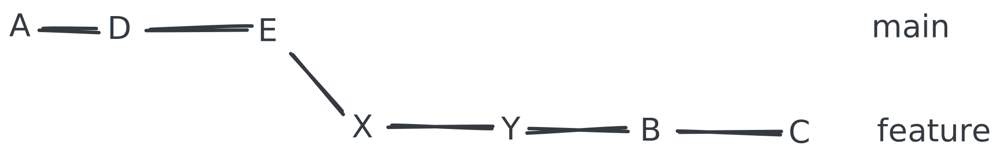
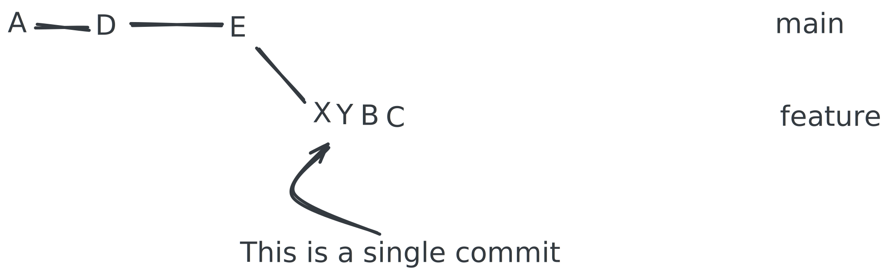

Interactive rebasing and squashing
Sometimes we want to squash multiple commits into one.
Maybe we did a lot of small commits with poor messages while working on a feature. Maybe we want to push a single commit containing all the changes for the feature—making it easy to revert later on, if needed.
In practice this is done with interactive rebasing.
Essentially squashing takes this.

And turns it into this.

Interactive rebasing allows squashing commits but also allows us to edit commit messages, reorder commits, and even remove commits.
Exercise: Squashing commits - set the stage
We need to set the stage first by creating some commits.
- Navigate to the
remote-gitrepository.- Checkout the
featurebranch.- Append 3 changes to the
README.mdfile and commit each change with a unique message.
Solution: Squashing commits - set the stage
Navigate to the remote-git repository.
git checkout feature
echo "Change 1" >> README.md
git add README.md
git commit -m "Change 1"
echo "Change 2" >> README.md
git add README.md
git commit -m "Change 2"
echo "Change 3" >> README.md
git add README.md
git commit -m "Change 3"
Interactive rebase steps
To begin, we need to provide a point in time to rebase with. The simplest way to do this is typically with HEAD~n, where n is the number of commits back we want to go. This format is also called a commit-ish.
So, HEAD~1 means one commit back from HEAD.
The command for interactive rebase is:
git rebase -i <commit-ish>
Exercise: Squashing commits - interactive rebase
Now we will squash the commits.
We want all the 3 latest changes to be a single commit and update the commit message.
- Start an interactive rebase with the last 3 commits.
Solution: Squashing commits - interactive rebase
git rebase -i HEAD~3
Output:
pick a4ebcc2 Change 1
pick 04b43c8 Change 2
pick 8406816 Change 3
# Rebase 7142285..8406816 onto 7142285 (3 commands)
#
# Commands:
# p, pick <commit> = use commit
# r, reword <commit> = use commit, but edit the commit message
# e, edit <commit> = use commit, but stop for amending
# s, squash <commit> = use commit, but meld into previous commit
# f, fixup [-C | -c] <commit> = like "squash" but keep only the previous
# commit's log message, unless -C is used, in which case
# keep only this commit's message; -c is same as -C but
# opens the editor
# x, exec <command> = run command (the rest of the line) using shell
# b, break = stop here (continue rebase later with 'git rebase --continue')
# d, drop <commit> = remove commit
# l, label <label> = label current HEAD with a name
# t, reset <label> = reset HEAD to a label
# m, merge [-C <commit> | -c <commit>] <label> [# <oneline>]
# create a merge commit using the original merge commit's
# message (or the oneline, if no original merge commit was
# specified); use -c <commit> to reword the commit message
# u, update-ref <ref> = track a placeholder for the <ref> to be updated
# to this position in the new commits. The <ref> is
# updated at the end of the rebase
#
# These lines can be re-ordered; they are executed from top to bottom.
#
# If you remove a line here THAT COMMIT WILL BE LOST.
To squash the commits, we need to change the pick command to squash or s for the commits we want to squash.
pick a4ebcc2 Change 1
s 04b43c8 Change 2
s 8406816 Change 3
And we save with :wq and Enter.
This brings up the editor to edit the commit message.
Output:
# This is a combination of 3 commits.
# This is the 1st commit message:
Change 1
# This is the commit message #2:
Change 2
# This is the commit message #3:
Change 3
# Please enter the commit message for your changes. Lines starting
# with '#' will be ignored, and an empty message aborts the commit.
#
# Date: Wed Sep 25 00:24:11 2024 +0200
#
# interactive rebase in progress; onto 7142285
# Last commands done (3 commands done):
# squash 04b43c8 Change 2
# squash 8406816 Change 3
# No commands remaining.
# You are currently rebasing branch 'main' on '7142285'.
#
# Changes to be committed:
# modified: README.md
#
~
~
~
We edit the commit message to something like Feature X.
Output:
# This is a combination of 3 commits.
# This is the 1st commit message:
Feature X
# Please enter the commit message for your changes. Lines starting
# with '#' will be ignored, and an empty message aborts the commit.
#
# Date: Wed Sep 25 00:24:11 2024 +0200
#
# interactive rebase in progress; onto 7142285
# Last commands done (3 commands done):
# squash 04b43c8 Change 2
# squash 8406816 Change 3
# No commands remaining.
# You are currently rebasing branch 'main' on '7142285'.
#
# Changes to be committed:
# modified: README.md
#
~
~
~
And again we save with :wq and Enter.
Output:
[detached HEAD e3f045e] Feature X
Date: Wed Sep 25 00:24:11 2024 +0200
1 file changed, 3 insertions(+)
Successfully rebased and updated refs/heads/main.
Check the log to see the changes.
git log --oneline --graph
We will see that the 3 commits have been squashed into one with the message Feature X.
Output:
* e3f045e (HEAD -> main) Feature X
When we push to the remote respository, and in some cases you may need to do git push --force to overwrite the remote branch.
Know that it exists. Use --force with caution.